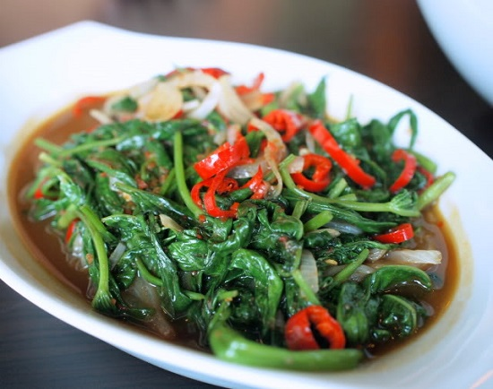

Kangkung Tumis
Masakan ini merupakan salah satu makanan favorit masyarakat Indonesia. Masakan ini sangat nikmat, mudah sekaligus murah meriah.
Bahan
- 1 ikat kangkung
- 1 lombok merah besar
- lombok merah kecil (cabe rawit) sesuai selera
- 2 siung bawang putih
- 5 siung bawang merah
- Saus tiram ± 3 sdm
- Lengkuas 1/3 ruas jari
- Sedikit garam
- Gula aren/gula pasir secukupnya
- Terasi
- Tomat
- Mentega / minyak
Cara Membuat
- Siapkan adalah kangkung yang telah dibersihkan dan di petik daunnya.
- Iris bawang merah dan bawang putih, tomat dan cabai.
- Panaskan mentega atau minyak di atas penggorengan, tumis bawang merah dan bawang putih hingga harum.
- Masukan cabai , terasi, dan lengkuas segera lingkarkan saus tiram di pinggir2 bumbu yang sedang ditumis, bukan langsung ke bumbunya.
- Setelah itu masukan kangkung yang telah di cuci, jangan ditambahkan air. usahakan jangan menambahkan air ketika menumis sayuran. karena sebenarnya air akan keluar sendiri dari kangkung yang dicuci. akali dengan mengecilkan api.
- Setelah matang/atau hampir matang masukan garam dan gula. tahap terakhir ini usahakan untuk mencicipi dahulu kuahnya. karena biasanya terasi dan saus tiram sendiri sudah asin.
- Masukan tomat dan siap di hidangkan hangat-hangat.
|